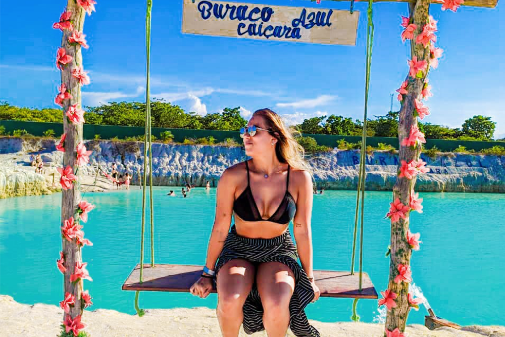
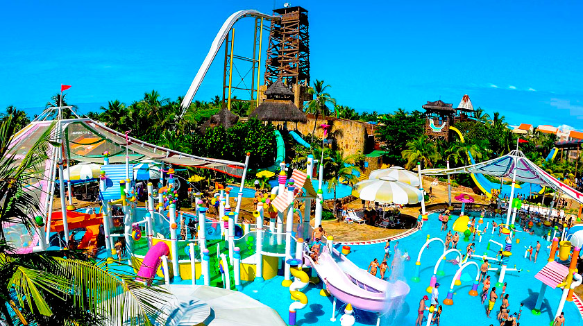
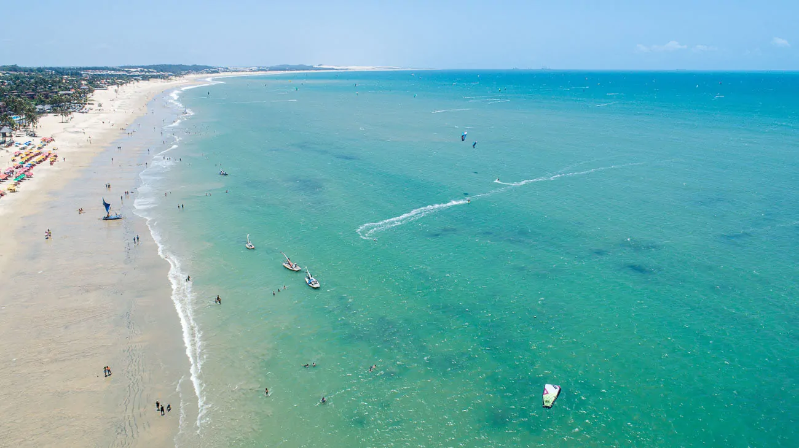

O Ceará, estado localizado no nordeste do Brasil, é conhecido por suas belas praias, paisagens deslumbrantes e cultura rica. Aqui estão alguns dos principais pontos turísticos do Ceará:
Bem-vindo ao Ceará


Jericoacoara: Um dos destinos mais famosos do Ceará, Jericoacoara é uma vila de pescadores encantadora. Suas praias paradisíacas, como a Praia de Jericoacoara e a Praia da Pedra Furada, atraem turistas de todo o mundo. As dunas de areia, a Lagoa do Paraíso e a Duna do Pôr do Sol são pontos turísticos imperdíveis.

Canoa Quebrada: Localizada a cerca de 160 km de Fortaleza, Canoa Quebrada é conhecida por suas falésias coloridas e praias tranquilas. A vila oferece uma atmosfera descontraída, com bares, restaurantes e lojas. O passeio de buggy pelas dunas é uma atividade popular, assim como a prática de kitesurf.

Beach Park: Situado na praia de Porto das Dunas, próximo a Fortaleza, o Beach Park é um dos maiores parques aquáticos da América Latina. Com toboáguas emocionantes, piscinas, áreas infantis e uma praia artificial, é um local perfeito para diversão em família.

Cumbuco: A apenas 30 km de Fortaleza, Cumbuco é uma praia popular entre os praticantes de kitesurf e windsurf. Suas dunas de areia branca proporcionam um cenário espetacular para passeios de buggy e prática de sandboard.